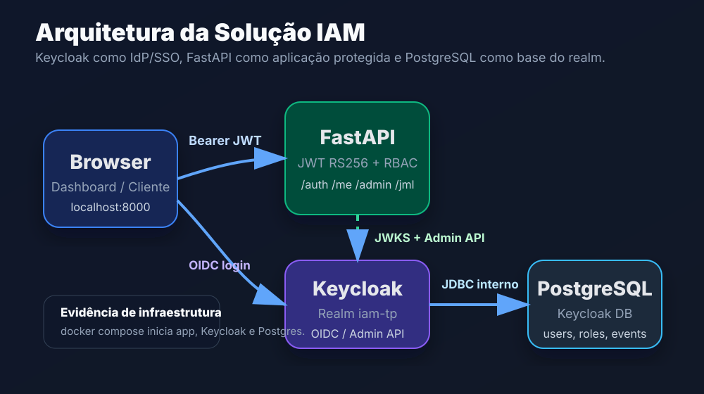
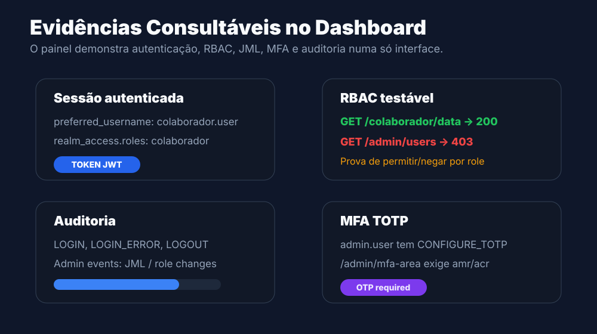
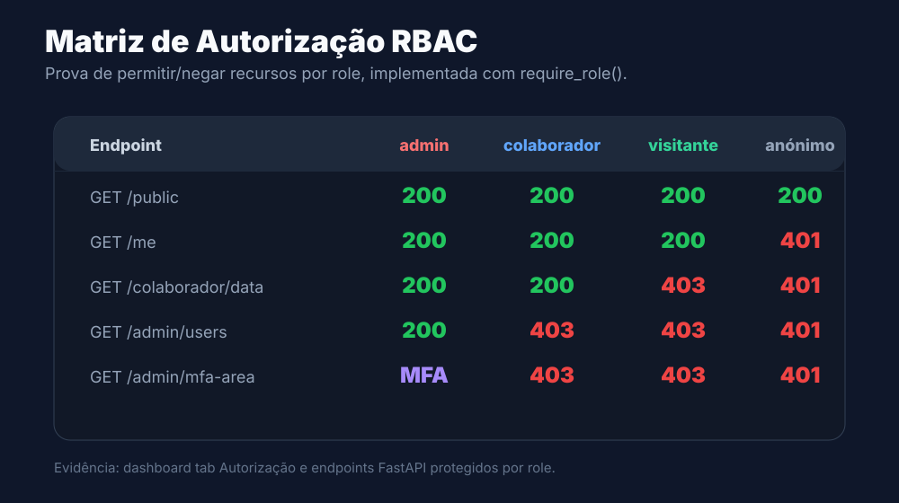
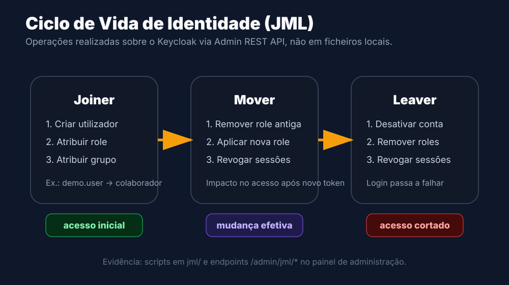

Relatório Curto
Projeto IAM com Keycloak
Solução funcional de Identity and Access Management para autenticação OIDC, autorização RBAC, MFA TOTP, ciclo de vida JML e auditoria operacional.

1. Objetivo e Enquadramento
O objetivo do projeto é construir uma solução IAM funcional para um cenário realista, usando o Keycloak como componente central de identidade. A solução permite autenticar utilizadores, aplicar políticas de autorização, gerir o ciclo de vida de identidades, exigir autenticação multifator e consultar evidências de auditoria.
O caso de uso escolhido é uma aplicação interna com três perfis de acesso: admin, colaborador e visitante. A aplicação protegida é uma API FastAPI acompanhada por um dashboard de demonstração.
Componentes principais
- Keycloak 26: Identity Provider, realm dedicado, roles, groups, users, MFA e eventos.
- FastAPI: aplicação integrada com OIDC, validação de JWT RS256 e endpoints protegidos.
- PostgreSQL: persistência interna do Keycloak.
- Dashboard: painel para demonstrar login, claims, RBAC, JML, MFA e auditoria.
Reprodutibilidade
O ficheiro docker-compose.yml inicia Keycloak, PostgreSQL e a aplicação. O ficheiro realm-export.json permite importar a configuração do realm e reproduzir utilizadores, roles, groups, cliente OIDC, MFA e eventos.
docker compose up -d --build. Após o arranque, o dashboard fica disponível em http://localhost:8000/dashboard e o Keycloak em http://localhost:8081.2. Autenticação OIDC e Gestão de Sessão
A autenticação é delegada no Keycloak. A aplicação FastAPI recebe tokens OIDC/JWT e valida a assinatura RS256 através da JWKS publicada pelo realm. Também valida audience e issuer, evitando aceitar tokens emitidos para clientes ou realms errados.
Claims usadas pela aplicação
| Claim | Finalidade | Uso no projeto |
|---|---|---|
sub | Identificador único do utilizador | Exibido em `/me` e no dashboard |
email | Contacto do utilizador | Exibido no perfil da sessão |
preferred_username | Nome de login | Identificação visual do utilizador |
realm_access.roles | Papéis atribuídos | Base da autorização RBAC |
amr / acr | Prova de MFA | Usado por `/admin/mfa-area` |
Fluxo implementado
O dashboard permite login através de `/auth/token`, que chama o token endpoint do Keycloak. Para a demo, este fluxo simplifica a obtenção de tokens; no realm, o cliente também está configurado com Authorization Code + PKCE para o fluxo browser recomendado.
Após login, o dashboard mostra o payload do JWT, as roles e o tempo restante até expiração. Isto serve como evidência direta de autenticação e leitura de claims.

3. Autorização RBAC
A autorização é implementada com papéis explícitos no Keycloak e dependências FastAPI. A função require_role() verifica as roles presentes em realm_access.roles e rejeita pedidos sem privilégio suficiente com HTTP 403.
Roles e política de acesso
- visitante: acesso mínimo a recursos públicos e ao próprio perfil autenticado.
- colaborador: acesso a recursos internos de colaborador.
- admin: acesso total, incluindo JML, auditoria e zonas administrativas.

Evidência técnica
| Endpoint | Proteção | Resultado esperado |
|---|---|---|
/public | Sem autenticação | Todos conseguem aceder |
/me | JWT válido | Devolve claims básicas |
/colaborador/data | colaborador ou admin | Visitante recebe 403 |
/admin/users | admin | Colaborador e visitante recebem 403 |
/admin/mfa-area | admin + MFA | Admin sem MFA recebe 403 |
4. MFA e Ciclo de Vida JML
MFA TOTP
O utilizador admin.user tem a required action CONFIGURE_TOTP. No primeiro login browser, o Keycloak obriga à configuração de uma aplicação autenticadora TOTP. O endpoint /admin/mfa-area exige role admin e prova de MFA através de amr ou acr.
/admin/mfa-area; token admin com OTP comprovado deve devolver 200.JML integrado com Keycloak
Os fluxos Joiner, Mover e Leaver foram implementados sobre o Keycloak Admin REST API. Isto garante que a identidade é gerida no diretório central e não em ficheiros locais.

| Fluxo | Ação | Efeito de segurança |
|---|---|---|
| Joiner | Cria utilizador, atribui role e grupo inicial | Acesso inicial controlado |
| Mover | Remove role/grupo antigo, atribui novo e revoga sessões | Impacto imediato no acesso após novo token |
| Leaver | Desativa utilizador, remove roles e revoga sessões | Bloqueia login e corta sessões ativas |
5. Auditoria, Segurança e Conclusão
Auditoria
O Keycloak tem eventos de utilizador e eventos administrativos ativos. A aplicação expõe endpoints de auditoria protegidos por admin e o dashboard apresenta eventos e resumo por tipo.
- Eventos de login, falhas de login, logout e refresh.
- Eventos de MFA, incluindo configuração e falhas TOTP.
- Eventos administrativos associados a alterações de utilizadores, grupos e roles.
Segurança operacional
| Risco | Mitigação aplicada |
|---|---|
| Token inválido ou forjado | Validação RS256 via JWKS, audience e issuer |
| Acesso indevido a recursos | RBAC no backend com `require_role()` |
| Admin sem segunda camada | Required action TOTP e endpoint com `require_mfa()` |
| Sessões antigas após mudança de role | Revogação de sessões no Mover e Leaver |
| Falta de evidência | Eventos Keycloak e dashboard de auditoria |
Validação final
A solução cumpre os requisitos técnicos obrigatórios do enunciado: Keycloak central, OIDC, RBAC, MFA TOTP, JML via Admin API, auditoria, Docker Compose e import/export do realm.
Os testes automatizados validam a lógica de JWT, roles e MFA. A demo final no dashboard permite demonstrar os requisitos de forma sequencial em cerca de 10 minutos.